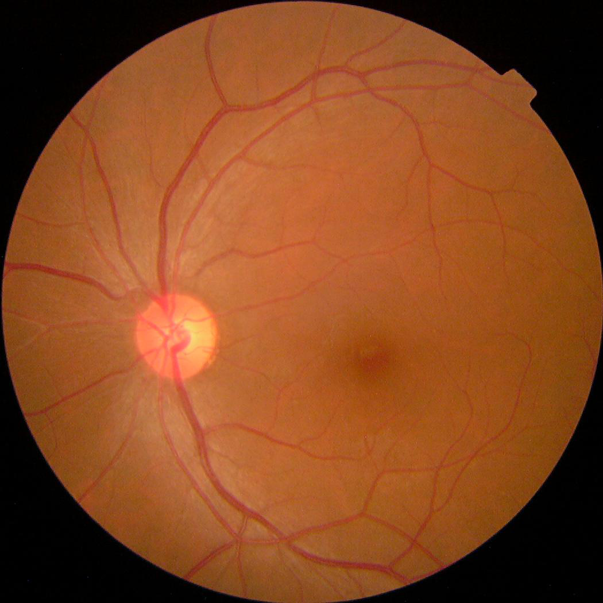

Demo Cases:
AI POWERED
Diabetic Retinopathy
Diabetic Retinopathy
Screening
Upload a retinal fundus image and let our AI model analyze it for early signs of diabetic retinopathy.

AI Accuracy
~92%
(On test data)
Fast Analysis
< 10 seconds
(Average)
Better Outcomes
Early detection saves vision
How It Works
1. Upload
Upload a clear retinal fundus image.
→
2. AI Analysis
Our model detects signs of DR.
→
3. View Results
Get prediction with confidence score.
→
4. Take Action
Follow recommended next steps.
Screening Results
No DR Detected
Normal Retina
Confidence Score
96%
Key Findings
- No signs of microaneurysms detected
- No hemorrhages detected
- Blood vessels appear normal
- Optic disc is healthy
Recommendation
Maintain regular eye checkups (at least once a year) and manage blood sugar levels.